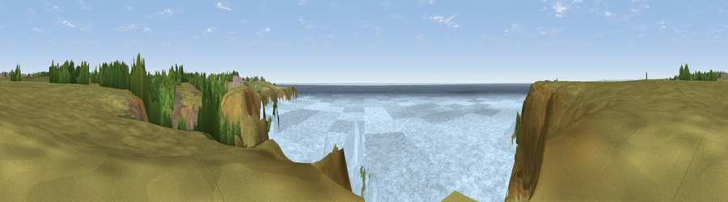

Viewpoint near Lizard
#10114 in England · top 18% of its area beats it · near LizardThe view, rendered

A 360° render of this exact spot computed from the terrain model, tree cover and land cover — summer colours, afternoon light, calibrated against photographs of famous viewpoints. Real trees, hedges and buildings will differ in detail.
The panorama
Grey silhouette: terrain skyline in each direction (720 bearings, Earth curvature and refraction included). Dashed green: skyline with trees (+15 m) and buildings (+8 m) as obstacles. Blue strip: how far the ground is visible on each bearing.
Where the view opens
Wedge length = distance to the farthest visible ground on that bearing (vegetation-aware). Rings at 10, 25 and 50 km.
What fills the view
67% water · 26% grassland · 3% woodland · 1% wetland · 1% shrubland ·
Angular shares of the visible panorama (visual magnitude), not map area. Landscape diversity 0.39 (0–1 Shannon).
Key numbers
More beautiful places nearby
The staircase of upgrades: each row has a higher view potential than everything closer. Driving times are estimates from straight-line distance, calibrated against real road routing — check an actual route before setting out.
| Place | Direction | Drive | Score |
|---|---|---|---|
| Viewpoint near Lizard | W · 1 km | ~2 min | 65.2 |
| Viewpoint near Mullion | NW · 3 km | ~8 min | 72.0 |
| Viewpoint near Mullion | NW · 4 km | ~9 min | 72.7 |
| Viewpoint near Porthoustock | NE · 15 km | ~27 min | 74.0 |
| Viewpoint near Ashton | NNW · 18 km | ~31 min | 81.3 |
| Tregonning Hill | NNW · 19 km | ~32 min | 83.0 |
| Rosewall Hill | NW · 32 km | ~50 min | 88.0 |
| Viewpoint near Combe Martin | NNE · 162 km | ~184 min | 88.9 |
49.97678, -5.23404 · source: screening · position refined by local search. Computed location — check access rights before visiting.